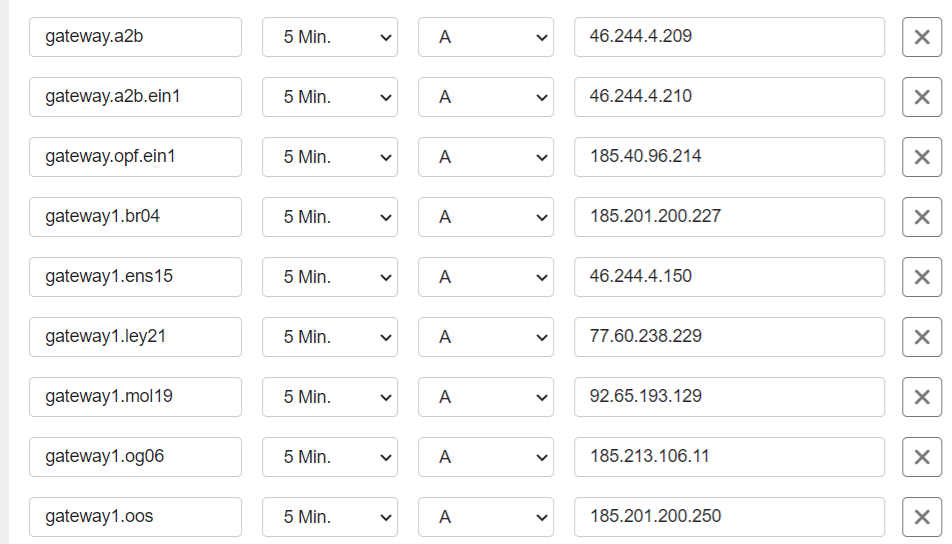

Camera's
Algemeen
Elke vestiging heeft zijn eigen camera's die de vestigingsmanager kan bekijken via Truvision. Alle gebruikers die de camera beelden kunnen bekijken hebben een view account. Deze accounts zijn terug te vinden in passwordstate. Om instellingen aan te passen in het camerasysteem van een vestiging dien je in te loggen met het admin account voor die betreffende vestiging, ook deze gegevens zijn terug te vinden in passwordstate.
Configureren
De camera's kan je beheren in Truvision. Dit programma staat geïnstalleerd op de MP-MGMT12. Je moet dan wel inloggen onder het admin account van de vestiging anders heb je niet de juiste rechten.
Installeren
De software van Trustvision kun je downloaden via de onderstaande link.
https://be.firesecurityproducts.com/nl/product/video/TruVision%20Navigator%209_1/86676
Mobiel
De vestigingsmanagers willen vaak de camera beelden ook kunnen bekijken op hun mobiele telefoon. Hiervoor moeten ze de app TVRMobile installeren via de appstore.
Voordat je dit kunt configureren moet er eerst per vestiging een regel aangemaakt worden binnen TransIP onder montapacking.it, anders kan je de camera's extern niet benaderen.
Voor de onderliggende vestigingen zijn de regels al aangemaakt: 
Ga in de app naar apparaten > klik op het plusje rechts bovenin > Manual add
Apparaat naam: Monta Molenaarsgraaf
Registratiemodus: IP/Domain
Adres: gateway1.mol19.montapacking.it
Poort: 8002
Gebruikersnaam: (Zie passwordstate)
Wachtwoord: (Zie passwordtstate)
Het Poortnummer kan je vinden als je bent ingelogd als admin op de betreffende vestiging.